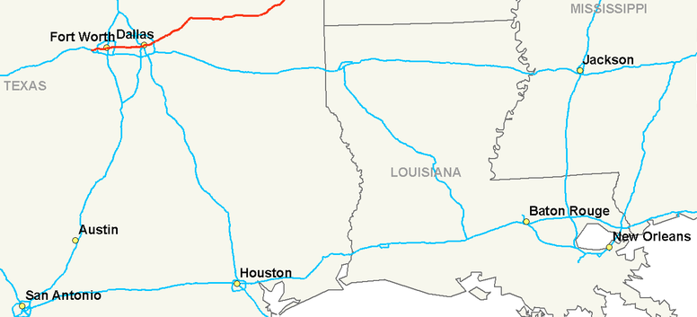
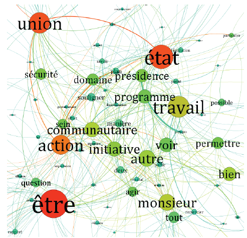

Théorie des graphes Cours 1 · L3 S5
Modéliser le réel avec des graphes
Routeurs, villes, mots, joueurs : beaucoup de systèmes réels se résument à des entités et à leurs interactions, qu'un graphe représente. Ce premier chapitre définit les graphes, orientés ou pondérés, le voisinage et le degré d'un sommet, les trois façons de stocker un graphe en mémoire, puis la notion de modèle ; il se termine par les cycles eulériens, vus en séance.
Objectifs
- Modéliser un système réel par un graphe : choisir les sommets, les arêtes, l'orientation et les poids.
- Écrire un graphe \(G = (V, E)\), et calculer le nombre de sommets \(n\), le nombre d'arêtes \(m\), le voisinage \(N(u)\) et le degré \(d(u)\) d'un sommet.
- Calculer voisinages et degrés entrants et sortants dans un graphe orienté, et le degré pondéré.
- Représenter un graphe par une liste d'arêtes, une matrice d'adjacence ou une liste d'adjacence, et comparer leurs coûts.
- Dire si un graphe admet un cycle eulérien.
Prérequis
- Ensembles : appartenance, inclusion, produit cartésien \(V \times V\), cardinal \(|V|\).
- Python : listes, dictionnaires (pour les représentations en mémoire et NetworkX).
Complément À propos des sources
Le cours s'appuie sur un poly rédigé par l'enseignant, Graphes et applications, dont ce chapitre reprend le chapitre 1, et sur les notes prises au CM 1. Les références « p. N » sont les numéros imprimés en bas des pages du poly ; dans un lecteur de PDF, la page imprimée N est la page N + 2. Les cycles eulériens, abordés en séance mais absents du chapitre 1 du poly, viennent des notes.
Les calculs de la page (degrés, matrices, listes d'adjacence, cycles eulériens) ont été vérifiés avec la bibliothèque Python NetworkX, celle de l'aide-mémoire Networkx_CheatSheet.pdf fourni avec le cours.
Modéliser le réel p. 2–3
Quelle est la conséquence de déconnecter un routeur sur le réseau ? Quel est le plus court chemin pour aller d'un endroit à un autre ? Quel·les sont les influenceur·ses d'un réseau social ? Comment se structure un mouvement sur Internet ? Quel film recommander ?
Le cours pose les bases pour répondre à ces questions, en s'appuyant sur la théorie des graphes et sur la théorie des réseaux complexes. On modélise d'abord la question et le système où elle se pose, puis on met en œuvre les algorithmes qui y répondent. Pour la première question, le système à modéliser est Internet, avec en son sein des entités, les routeurs, dont les interactions (par exemple le protocole de routage RIP) font fonctionner le réseau.
Un grand nombre de systèmes du monde réel impliquent ainsi des interactions entre des entités, et la modélisation sous forme de graphe y est particulièrement adaptée. Ce chapitre introduit les graphes, les systèmes qu'il est pertinent de modéliser ainsi, et la notion de modèle ; il pose aussi des questions qui servent de fil rouge au cours.
Remarque Le graphe comme modèle p. 3
« Systems as diverse as genetic networks or the world wide web are best described as networks with complex topology. » Des systèmes aussi variés que les réseaux génétiques ou le Web sont décrits au mieux par des réseaux à la topologie complexe. (Albert-László Barabási et Réka Albert, Emergence of Scaling in Random Networks, 1999)
Graphes : définition et exemples p. 4–7
Un graphe se décrit par deux ensembles, et se dessine par des ronds reliés par des traits. Trois exemples montrent comment on passe d'un système réel à un graphe.
Définition p. 4
Définition 1 Graphe
Soit \(G = (V, E)\) un graphe (graph), tel que \(V\) représente l'ensemble des sommets (vertices) et \(E \subset V \times V\) l'ensemble des arêtes (edges) qui connectent ces sommets.
Concrètement, \(G\) est un petit dessin, avec les éléments de \(V\) dessinés comme des ronds, reliés par les traits décrits dans \(E\). La figure décrit le graphe de sommets \(V = \{A, B, C, D\}\) et d'arêtes \(E = \{(A, B), (B, D), (D, C), (C, A)\}\).
Remarque Pas d'ordre dans une arête
Il n'y a pas d'ordre à respecter dans l'écriture des arêtes : \((A, B) = (B, A)\) indique qu'il existe une connexion entre A et B, sans notion de direction. Pour plus de lisibilité, on écrit souvent les sommets dans l'ordre alphabétique, \((A, B)\) plutôt que \((B, A)\), ou dans l'ordre croissant s'ils sont numérotés, \((1, 2)\) plutôt que \((2, 1)\).
Ce vocabulaire est celui de la théorie des graphes. La théorie des réseaux complexes parle de réseau pour un graphe, de nœuds pour les sommets et de liens pour les arêtes ; la différence s'arrête là, et le cours emploie indifféremment les deux vocabulaires.
Ajout Les notes du CM 1 rappellent l'origine anglaise des lettres : \(V\) pour vertex (sommet), \(E\) pour edge (arête), \(G\) pour graph, et, plus loin, \(N\) pour neighbours (voisins).
Exemple 1 : un réseau routier p. 4–5
On veut étudier informatiquement le réseau autoroutier du sud des États-Unis. Pour en créer un modèle, on choisit de désigner les villes par des sommets, et les routes qui connectent directement deux villes par des arêtes : s'il existe un trajet entre deux villes qui ne passe pas par une autre ville, on crée une arête entre elles.

On obtient \(V = \{\)Fort Worth, Dallas, Jackson, Austin, San Antonio, Houston, Baton Rouge, New Orleans\(\}\), et onze arêtes : (Austin, Fort Worth), (Austin, Dallas), (Austin, San Antonio), (Baton Rouge, New Orleans), (Baton Rouge, Jackson), (Baton Rouge, Houston), (Dallas, Fort Worth), (Dallas, Houston), (Dallas, Jackson), (Jackson, New Orleans), (Houston, San Antonio).
Remarque Un choix de modélisation
La route qui mène de Fort Worth à Jackson peut sembler directe, mais on fait l'hypothèse qu'elle longe en fait la ville de Dallas, qui est immense : on ne crée donc pas d'arête entre Fort Worth et Jackson. Placer une arête ou non découle de la définition choisie pour le modèle.
Exemple 2 : un réseau de co-occurrences de mots p. 6
En linguistique ou en traitement automatique des langues, on étudie les relations entre les mots par leurs co-occurrences : deux mots co-occurrent dans un ensemble de documents s'ils apparaissent au moins une fois ensemble dans une même phrase. On parcourt les documents, on relève ces co-occurrences, puis on les représente par un graphe de co-occurrences, où les mots sont les sommets et la relation de co-occurrence entre deux mots une arête.

Exemple 3 : un réseau de matches p. 7
Au Grand Prix 2022 de la Fédération internationale des échecs (FIDE), en poule A, chaque joueur rencontre les trois autres ; chaque rencontre compte deux parties, l'une avec les blancs, l'autre avec les noirs. On crée un graphe dont les sommets sont les joueurs, avec une arête entre deux joueurs si et seulement si l'un des deux a marqué plus de points que l'autre lors de leur rencontre.
| Rang | Joueur | Elo (déc. 2021) | GRI | AND | SHA | BAC | Points |
|---|---|---|---|---|---|---|---|
| 1 | Dmitri Andreïkine (AND) | 2724 | ½ / 1 | — | ½ / ½ | 1 / ½ | 4 |
| 2 | Sam Shankland (SHA) | 2708 | 1 / ½ | ½ / ½ | — | ½ / ½ | 3½ |
| 3 | Étienne Bacrot (BAC) | 2642 | ½ / ½ | ½ / 0 | ½ / ½ | — | 2½ |
| 4 | Alexandre Grichtchouk (GRI) | 2763 | — | 0 / ½ | ½ / 0 | ½ / ½ | 2 |
La première ligne, colonne BAC, montre qu'Andreïkine a marqué un point (victoire) contre Bacrot avec les blancs, et un demi-point (nulle) avec les noirs : 1,5 point en tout, quand Bacrot n'en a marqué qu'un demi (colonne AND de la ligne 3). Il existe donc une arête entre ces deux joueurs. On obtient \(G = (V, E)\) avec \(V = \{\)GRI, AND, SHA, BAC\(\}\) et \(E = \{\)(AND, GRI), (AND, BAC), (SHA, GRI)\(\}\).
À vérifier Le poly présente d'abord la poule comme celle où Bacrot affronte Hikaru Nakamura (NAK), Andreï Essipenko (ESS) et Alexandre Grichtchouk (GRI) ; mais le tableau, la suite du texte et les graphes portent sur Andreïkine (AND) et Shankland (SHA). C'est cette seconde version, cohérente avec le tableau, qui est retenue.
Astuce Ce qu'on lit dans le graphe
- Le nombre de sommets \(n = |V| = 4\) indique que 4 joueurs s'affrontent.
- Il y a eu 3 rencontres où l'un des deux joueurs l'a emporté, puisque \(m = |E| = 3\).
- Il y a eu 6 rencontres en tout, car un graphe à \(n\) sommets a au plus \(\dfrac{n(n-1)}{2}\) arêtes : pour \(n = 4\), on obtient 6.
Ajout Ce maximum s'obtient en comptant les paires de sommets distincts : chaque sommet peut être relié aux \(n - 1\) autres, et chaque arête est alors comptée deux fois, une fois depuis chacune de ses extrémités.
Voisinage et degré p. 7–8 · CM 1
Les questions précédentes portaient sur le graphe entier. On peut aussi interroger les sommets un par un. Question 1 du poly : comment savoir si l'un des quatre joueurs est particulièrement sorti victorieux de ces rencontres ? Pour y répondre, il faut les notions de voisinage et de degré.
Définition 2 Voisinage d'un nœud
Soit \(G = (V, E)\) un graphe et \(u \in V\) un nœud de ce graphe. Le voisinage de \(u\) s'écrit
Définition 3 Degré d'un nœud
Soit \(G = (V, E)\) un graphe et \(u \in V\). Le degré de \(u\), noté \(d(u)\), est l'entier \(d(u) = |N(u)|\) : le nombre de voisins de \(u\).
À vérifier Les notes du CM 1 écrivent \(N(u) = \{ u \in V \mid (u, v) \in E \}\), avec \(u\) à gauche de la barre : c'est \(v\), le voisin, qu'il faut y lire, comme dans le poly.
Dans le graphe du tournoi :
- \(N(\text{AND}) = \{\text{GRI}, \text{BAC}\}\), \(d(\text{AND}) = 2\) ;
- \(N(\text{GRI}) = \{\text{AND}, \text{SHA}\}\), \(d(\text{GRI}) = 2\) ;
- \(N(\text{BAC}) = \{\text{AND}\}\), \(d(\text{BAC}) = 1\) ;
- \(N(\text{SHA}) = \{\text{GRI}\}\), \(d(\text{SHA}) = 1\).
Andreïkine et Grichtchouk semblent donc impliqués tous les deux dans plus de rencontres décisives. Mais il est impossible de savoir s'ils l'ont emporté, ou si c'est leur adversaire !
Remarque Les limites du modèle
Ce graphe montre qu'il n'y a eu que trois victoires sur six rencontres, mais pas lequel des deux joueurs l'a emporté. Il faut pour cela un modèle plus riche : un graphe orienté.
Complément La somme des degrés
Chaque arête \((u, v)\) compte une fois dans \(d(u)\) et une fois dans \(d(v)\). La somme des degrés de tous les sommets vaut donc deux fois le nombre d'arêtes :
Pour le tournoi : \(2 + 2 + 1 + 1 = 6 = 2 \times 3\). On en déduit qu'un graphe a toujours un nombre pair de sommets de degré impair ; on s'en servira pour les cycles eulériens (section 8).
Exercice 1 Le réseau routier Ajout
Pour le graphe du réseau routier (section 2.2), donner \(n\), \(m\), le degré de chaque ville et le nombre maximal d'arêtes d'un graphe à \(n\) sommets ; vérifier que la somme des degrés vaut \(2m\).
Solution proposée
\(n = 8\) villes et \(m = 11\) arêtes. Degrés : Dallas 4 ; Austin, Houston, Baton Rouge et Jackson 3 ; Fort Worth, San Antonio et New Orleans 2. La somme vaut \(4 + 4 \times 3 + 3 \times 2 = 22 = 2 \times 11\). Un graphe à 8 sommets a au plus \(8 \times 7 / 2 = 28\) arêtes : le réseau en compte 11.
Graphes orientés p. 8–10 · CM 1
Pour savoir qui a gagné, chaque lien doit avoir un sens : du vainqueur vers le vaincu. C'est le rôle des graphes orientés.
Définition 4 Graphe orienté
Soit le graphe \(G = (V, A)\), où \(V\) est l'ensemble des sommets, et \(A \subset V \times V\) l'ensemble des arêtes orientées, appelées arcs. Dans un graphe orienté (directed graph), si \(u\) et \(v\) sont deux sommets de \(V\), \((u, v) \ne (v, u)\). Pour un arc \((u, v) \in A\), on dit que \(u\) est le nœud source et \(v\) le nœud cible.
Pour le tournoi, on place un arc d'un joueur \(u\) vers un joueur \(v\) seulement si \(u\) a marqué plus de points que \(v\) lors de leur rencontre. On obtient \(G = (V, A)\) avec \(A = \{\)(AND, GRI), (AND, BAC), (SHA, GRI)\(\}\).
Dans un graphe orienté, on parle de voisinages et de degrés entrants (les nœuds reliés à \(u\) par des arcs dont \(u\) est la cible) et sortants (ceux reliés à \(u\) par des arcs dont \(u\) est la source). Le voisinage est l'union des voisinages entrant et sortant, et le degré la somme des degrés entrant et sortant.
Définitions 5 et 6 Voisinages et degrés entrants et sortants
Soit \(G = (V, A)\) un graphe orienté et \(u \in V\). Le voisinage entrant et le voisinage sortant de \(u\) s'écrivent
et ses degrés entrant et sortant valent \(d^-(u) = |N^-(u)|\) et \(d^+(u) = |N^+(u)|\).
Comme la source de chaque arc est le vainqueur, on compte les victoires avec le degré sortant :
- AND (Andreïkine) est la source de deux arcs : \(N^+(\text{AND}) = \{\text{GRI}, \text{BAC}\}\), \(d^+(\text{AND}) = 2\), deux victoires ; il n'est la cible d'aucun arc, \(N^-(\text{AND}) = \varnothing\), \(d^-(\text{AND}) = 0\), aucune défaite.
- BAC (Bacrot) n'est la source d'aucun arc : \(d^+(\text{BAC}) = 0\) ; il est la cible d'un arc, \(N^-(\text{BAC}) = \{\text{AND}\}\), \(d^-(\text{BAC}) = 1\), une défaite.
- GRI (Grichtchouk) : \(N^+(\text{GRI}) = \varnothing\), \(d^+(\text{GRI}) = 0\) ; \(N^-(\text{GRI}) = \{\text{AND}, \text{SHA}\}\), \(d^-(\text{GRI}) = 2\), deux défaites.
- SHA (Shankland) : \(N^+(\text{SHA}) = \{\text{GRI}\}\), \(d^+(\text{SHA}) = 1\), une victoire ; \(N^-(\text{SHA}) = \varnothing\), \(d^-(\text{SHA}) = 0\).
Puisque \(d^+(\text{AND}) \gt d^+(\text{SHA}) \gt d^+(\text{BAC}) = d^+(\text{GRI})\), Andreïkine semble sorti victorieux du tournoi : il est d'ailleurs premier du classement.
De manière générale, un graphe orienté s'impose quand les entités du système modélisé ont des interactions asymétriques. Pour les co-occurrences de l'exemple 2, on peut orienter les liens pour savoir quel mot précède l'autre : en reliant chaque mot à celui qui le suit, le vers de Suréna, de Corneille, « Toujours aimer, toujours souffrir, toujours mourir » donne le graphe ci-dessous.
À l'inverse, le réseau autoroutier de l'exemple 1 peut rester un graphe non orienté, puisque les autoroutes sont en général à double sens. Pour modéliser la circulation dans une ville, il faut en revanche un graphe orienté, si l'on veut tenir compte des rues à sens unique.
Graphes pondérés p. 10–11
Pour modéliser encore plus finement la circulation, on voudrait associer à chaque rue sa longueur, ou le temps moyen pour la traverser ; pour les co-occurrences, le nombre de fois que deux mots apparaissent ensemble. On attache alors une valeur à chaque arête.
Définition 7 Graphe pondéré
Un graphe pondéré (weighted graph) est un triplet \((V, E, W)\), ou \((V, A, W)\) s'il est aussi orienté, où \(V\) est un ensemble de sommets, \(E\) (ou \(A\)) l'ensemble des arêtes (ou des arcs) qui les connectent, et \(W : E \to \mathbb{R}\) (ou \(W : A \to \mathbb{R}\)) associe à chaque arête (ou arc) un poids réel.
Définition 8 Degré pondéré
Soit \(u \in V\) et \(N(u)\) son voisinage dans un graphe \(G = (V, E, W)\). Le degré pondéré \(d_w(u)\) de \(u\) est la somme des poids des liens qui connectent \(u\) à ses voisins :
Dans un graphe orienté \(G = (V, A, W)\) : \(d_w^+(u) = \sum_{v \in N^+(u)} W(uv)\) et \(d_w^-(u) = \sum_{v \in N^-(u)} W(vu)\).
Le modèle du tournoi s'affine ainsi d'étape en étape : le graphe non orienté montrait les rencontres décisives, l'orientation dit qui a gagné, et le poids dit de combien de points. Andreïkine a marqué un point de plus que Bacrot, et un point de plus que Grichtchouk ; Shankland, un point de plus que Grichtchouk : les trois arcs ont le poids 1.
Autre exemple, avec des données textuelles : ces vers d'Aragon, où la répétition de « Il y aura des fleurs » est mise en valeur par un graphe orienté et pondéré.
Il y aura des fleurs tant que vous en voudrez
Il y aura des fleurs couleur de l'avenir
Comme pour le vers de Corneille, on relie chaque mot à son successeur. Le poids d'un arc vaut 1 par défaut ; si un mot succède \(p\) fois à un autre, il vaut \(p\).
Ajout Les degrés de « fleurs » montrent ce que le poids ajoute : \(d^-(\text{fleurs}) = 1\) mais \(d_w^-(\text{fleurs}) = 2\) (un seul mot le précède, « des », deux fois), et \(d^+(\text{fleurs}) = d_w^+(\text{fleurs}) = 2\) (« tant » et « couleur », une fois chacun).
Exercice 2 Le graphe d'une phrase Ajout
Construire le graphe orienté et pondéré de la phrase « un chat voit un chien qui voit un chat », chaque mot étant relié à son successeur. Donner \(N^+(\text{un})\), \(d^+(\text{un})\) et \(d_w^+(\text{un})\), puis \(N^-(\text{un})\) et \(d_w^-(\text{un})\).
Solution proposée
Six arcs : (un, chat) de poids 2, (chat, voit) 1, (voit, un) 2, (un, chien) 1, (chien, qui) 1, (qui, voit) 1. Alors \(N^+(\text{un}) = \{\text{chat}, \text{chien}\}\), \(d^+(\text{un}) = 2\) et \(d_w^+(\text{un}) = 2 + 1 = 3\) ; \(N^-(\text{un}) = \{\text{voit}\}\) et \(d_w^-(\text{un}) = 2\). Le degré compte les voisins, le degré pondéré les occurrences.
Représenter un graphe p. 11–13
Au-delà des dessins, très utiles pour se représenter un graphe, il existe des structures de données simples, mais indispensables pour le représenter mathématiquement et informatiquement. Le poly en présente trois.
Liste d'arêtes p. 11–12
La liste d'arêtes est l'un des formats les plus utilisés pour les entrées et sorties, mais guère pour stocker un graphe en mémoire. En mémoire, elle est plutôt économe : elle stocke \(m = |E|\) paires d'entiers, plus éventuellement les poids. En revanche, si l'on garde le graphe sous cette forme (une list Python, par exemple), trouver le degré d'un nœud oblige à parcourir toute la liste, ce qui n'est pas efficace pour le graphe d'un réseau social de plusieurs milliards d'arêtes. Ajouter une arête est très rapide, mais en supprimer une peut aussi demander de parcourir toute la liste.
Le graphe des vers d'Aragon s'écrit ainsi, avec une colonne pour la source, une pour la cible et une pour le poids :
Il y 2
y aura 2
aura des 2
des fleurs 2
fleurs tant 1
tant que 1
que vous 1
vous en 1
en voudrez 1
fleurs couleur 1
couleur de 1
de l'avenir 1Quand le graphe n'est pas pondéré, le fichier n'a que deux colonnes. Pour indiquer que le graphe est orienté, on peut ajouter un fichier Readme à côté.
Matrice d'adjacence p. 12–13
La matrice d'adjacence est un tableau à double entrée, avec une ligne et une colonne par sommet : la case de la ligne \(u\) et de la colonne \(v\) contient 1 s'il y a une arête (ou un arc) de \(u\) vers \(v\), 0 sinon, ou le poids du lien si le graphe est pondéré. Elle contient \(n^2\) cases (avec \(n = |V|\)), ce qui dépasse en général très largement les \(m = |E|\) paires de la liste d'arêtes : elle stocke beaucoup de zéros, \(n^2 - m\).
Exemple Le graphe Political blogs
Le graphe des liens hypertextes entre blogs politiques américains, très étudié, a \(n = 1224\) sommets et \(m = 33\,430\) arêtes. Sous forme de liste d'arêtes, on stocke 33 430 paires d'entiers, soit 66 860 entiers ; sous forme de matrice d'adjacence, \(1224^2 = 1\,498\,176\) entiers.
En revanche, ajouter ou supprimer une arête est très efficace, et calculer le degré d'un nœud ne demande que de parcourir sa ligne ou sa colonne, soit \(n\) valeurs. C'est donc un format peu efficace en mémoire, mais efficace pour manipuler le graphe et accéder à ses informations. Pour le stocker en Python, on peut utiliser les tableaux de la bibliothèque numpy.
| AND | BAC | GRI | SHA | |
|---|---|---|---|---|
| AND | 0 | 1 | 1 | 0 |
| BAC | 1 | 0 | 0 | 0 |
| GRI | 1 | 0 | 0 | 1 |
| SHA | 0 | 0 | 1 | 0 |
| AND | BAC | GRI | SHA | |
|---|---|---|---|---|
| AND | 0 | 1 | 1 | 0 |
| BAC | 0 | 0 | 0 | 0 |
| GRI | 0 | 0 | 0 | 0 |
| SHA | 0 | 0 | 1 | 0 |
La matrice du graphe non orienté est symétrique par rapport à sa diagonale ; celle du graphe orienté ne l'est pas : il existe un arc (AND, BAC), mais pas (BAC, AND). On lit le degré sortant d'un sommet sur sa ligne, son degré entrant sur sa colonne.
La matrice d'adjacence des vers d'Aragon (13 × 13)
| Il | y | aura | des | fleurs | tant | que | vous | en | voudrez | couleur | de | l'avenir | |
|---|---|---|---|---|---|---|---|---|---|---|---|---|---|
| Il | 0 | 2 | 0 | 0 | 0 | 0 | 0 | 0 | 0 | 0 | 0 | 0 | 0 |
| y | 0 | 0 | 2 | 0 | 0 | 0 | 0 | 0 | 0 | 0 | 0 | 0 | 0 |
| aura | 0 | 0 | 0 | 2 | 0 | 0 | 0 | 0 | 0 | 0 | 0 | 0 | 0 |
| des | 0 | 0 | 0 | 0 | 2 | 0 | 0 | 0 | 0 | 0 | 0 | 0 | 0 |
| fleurs | 0 | 0 | 0 | 0 | 0 | 1 | 0 | 0 | 0 | 0 | 1 | 0 | 0 |
| tant | 0 | 0 | 0 | 0 | 0 | 0 | 1 | 0 | 0 | 0 | 0 | 0 | 0 |
| que | 0 | 0 | 0 | 0 | 0 | 0 | 0 | 1 | 0 | 0 | 0 | 0 | 0 |
| vous | 0 | 0 | 0 | 0 | 0 | 0 | 0 | 0 | 1 | 0 | 0 | 0 | 0 |
| en | 0 | 0 | 0 | 0 | 0 | 0 | 0 | 0 | 0 | 1 | 0 | 0 | 0 |
| voudrez | 0 | 0 | 0 | 0 | 0 | 0 | 0 | 0 | 0 | 0 | 0 | 0 | 0 |
| couleur | 0 | 0 | 0 | 0 | 0 | 0 | 0 | 0 | 0 | 0 | 0 | 1 | 0 |
| de | 0 | 0 | 0 | 0 | 0 | 0 | 0 | 0 | 0 | 0 | 0 | 0 | 1 |
| l'avenir | 0 | 0 | 0 | 0 | 0 | 0 | 0 | 0 | 0 | 0 | 0 | 0 | 0 |
La matrice n'est pas symétrique, puisque le graphe est orienté : à la ligne « Il », colonne « y », le 2 dit qu'un arc de poids 2 va de « Il » à « y », mais rien ne va de « y » à « Il ». Sur ses 169 cases, 157 sont des zéros.
Liste d'adjacence p. 12–13
La liste d'adjacence décrit, pour chaque sommet, la liste de ses voisins. On peut l'implémenter comme une list de list, ou comme un dict qui a pour clés les sommets et pour valeurs les listes de leurs voisins. Elle est avantageuse sur les deux plans : la mémoire, car elle ne stocke aucun zéro, et le temps de calcul, car elle donne un accès rapide aux voisins d'un sommet.
{
Il : [(y,2)]
y : [(aura,2)]
aura : [(des,2)]
des : [(fleurs,2)]
fleurs : [(tant,1), (couleur,1)]
tant : [(que,1)]
que : [(vous,1)]
vous : [(en,1)]
en : [(voudrez,1)]
couleur : [(de,1)]
de : [(l'avenir,1)]
}Le graphe étant orienté, on stocke qu'« Il » a pour voisin sortant « y », mais pas l'inverse. Dans ce cas orienté et pondéré, chaque sommet \(u\) a pour valeur une liste de couples : ses voisins sortants (\(N^+(u)\)) et le poids des liens qui l'y relient. Pour les deux graphes du tournoi :
{
AND : [BAC, GRI]
BAC : [AND]
GRI : [AND, SHA]
SHA : [GRI]
}{
AND : [BAC, GRI]
BAC : []
GRI : []
SHA : [GRI]
}Complément Les trois représentations côte à côte
| Liste d'arêtes | Matrice d'adjacence | Liste d'adjacence | |
|---|---|---|---|
| Mémoire | \(m\) paires | \(n^2\) cases | une entrée par sommet, \(m\) voisins en tout (\(2m\) si non orienté) |
| Degré d'un sommet | parcourir les \(m\) arêtes | parcourir sa ligne : \(n\) cases | la longueur de sa liste |
| Usage | fichiers d'entrée et de sortie | calcul matriciel (numpy) | stockage en mémoire, algorithmes |
Complément Les mêmes graphes avec NetworkX
La bibliothèque NetworkX, celle de l'aide-mémoire du cours, stocke ses graphes comme des listes d'adjacence (des dictionnaires imbriqués) et calcule tout ce qui précède :
import networkx as nx
G = nx.Graph() # non orienté
G.add_edges_from([("AND", "GRI"), ("AND", "BAC"), ("SHA", "GRI")])
print(G.number_of_nodes(), G.number_of_edges()) # n et m
print(dict(G.degree())) # d(u) pour chaque u
D = nx.DiGraph() # orienté
D.add_edges_from([("AND", "GRI"), ("AND", "BAC"), ("SHA", "GRI")])
print(dict(D.out_degree())) # d+(u) : les victoires
print(dict(D.in_degree())) # d-(u) : les défaites
print(nx.to_numpy_array(D, nodelist=["AND", "BAC", "GRI", "SHA"]).astype(int))$ python tournoi.py
4 3
{'AND': 2, 'GRI': 2, 'BAC': 1, 'SHA': 1}
{'AND': 2, 'GRI': 0, 'BAC': 0, 'SHA': 1}
{'AND': 0, 'GRI': 2, 'BAC': 1, 'SHA': 0}
[[0 1 1 0]
[0 0 0 0]
[0 0 0 0]
[0 0 1 0]]Pour un graphe pondéré, add_weighted_edges_from prend des triplets (source, cible, poids), et D.out_degree(u, weight="weight") donne le degré pondéré.
Un modèle ? p. 14 · CM 1
Un graphe ne retient du système réel que les entités et leurs liens. C'est un choix, qui fait sa force et ses limites.
Définition Modèle
Un modèle est une représentation simplifiée d'un système réel. Il a pour but de simplifier l'étude et la compréhension du système, en concentrant ses caractéristiques les plus importantes. En évitant de représenter exhaustivement le système réel, on en réduit la complexité, ce qui permet de l'analyser.
Prenons un réseau social en ligne, modélisé par un graphe dont les sommets sont les utilisateur·rices et les arêtes les liens d'amitié. Ce modèle est pertinent pour représenter les connexions entre internautes ; mais pour comprendre pourquoi ces connexions existent, il manque beaucoup d'informations : les liens de parenté, les écoles, universités et entreprises fréquentées, les loisirs… Ces informations sont cruciales pour comprendre les liens entre humains, même en ligne, mais les modéliser exhaustivement est impossible, et rendrait l'analyse extrêmement complexe. On choisit donc un modèle réaliste et exploitable. Il sert déjà à répondre à des questions classiques :
- Quelles nouvelles connexions suggérer à un·e internaute ? C'est un problème de recommandation, qui s'apparente, sur un graphe, à la prédiction de lien : prédire l'apparition d'une arête entre deux sommets.
- À qui proposer un placement de produit ? Un individu important dans le réseau, qui a de l'influence sur les autres, est susceptible de favoriser l'adoption d'un produit.
- Comment endiguer la propagation d'une épidémie ? Le réseau social des personnes contaminées permet, dans certains cas, des stratégies de vaccination ou de quarantaine efficaces.
- Ce profil est-il un robot ?
Dans tous ces cas, connaître exhaustivement les liens et leur nature (parenté, collègues, même club de sport…) permettrait d'affiner les réponses. Mais un modèle de graphe des connexions observées en ligne apporte déjà des réponses efficaces, avec des algorithmes rapides dont on évalue les performances.
Cycles eulériens notes CM 1
La théorie des graphes est née d'une promenade : peut-on parcourir une ville en passant une fois et une seule sur chacun de ses ponts ? Les notes du CM 1 en donnent la réponse sous forme de condition sur les degrés.
Définition Cycle eulérien Ajout
Un cycle eulérien est un parcours d'un graphe qui emprunte chaque arête une fois et une seule, et revient à son point de départ. Un graphe qui en possède un est dit eulérien.
Théorème Euler
Un graphe connexe admet un cycle eulérien si et seulement si tous ses sommets sont de degré pair.
Idée de la preuve
Dans un sens : chaque fois que le cycle passe par un sommet, il y arrive par une arête et en repart par une autre ; les arêtes d'un sommet sont donc utilisées par paires, et son degré est pair. Dans l'autre sens, on construit le cycle : en partant d'un sommet, on avance sans réutiliser d'arête ; comme tous les degrés sont pairs, on ne peut rester bloqué qu'au point de départ. Si des arêtes restent inutilisées, on recommence depuis un sommet du cycle qui en touche une, et l'on greffe le nouveau cycle sur le premier.
À vérifier Les notes écrivent : « Un graphe admet un cycle eulérien ssi ses sommets sont connectés à un autre sommet via un nombre pair d'arêtes », c'est-à-dire si tous ses sommets sont de degré pair. Il faut ajouter que le graphe est connexe, en ne comptant pas les sommets isolés : deux triangles disjoints ont tous leurs sommets de degré 2, mais aucun parcours ne passe de l'un à l'autre. La connexité est l'objet du chapitre 2 du poly.
Le carré de la section 2.1 a ses quatre sommets de degré 2 : il est eulérien, et A, B, D, C, A en est un cycle eulérien. Le réseau routier, lui, ne l'est pas : Austin, Houston, Baton Rouge et Jackson sont de degré 3.
Complément Les sept ponts de Königsberg Hors programme
En 1736, Euler étudie la ville de Königsberg (aujourd'hui Kaliningrad), traversée par une rivière qui délimite quatre terres, reliées par sept ponts. Peut-on faire une promenade qui passe une fois sur chaque pont et revient au départ ? En représentant les terres par des sommets et les ponts par des arêtes, on obtient un graphe (avec des arêtes multiples entre deux mêmes sommets), et Euler montre que c'est impossible : les quatre sommets sont de degré impair.
Exercice 3 Réparer Königsberg Ajout
Combien de ponts faut-il ajouter, au minimum, pour que le graphe de Königsberg devienne eulérien ? Entre quelles terres ?
Indice
Un pont ajouté augmente de 1 le degré de chacune de ses deux extrémités.
Solution proposée
Les quatre sommets sont de degré impair, et un pont corrige au plus deux degrés : il en faut au moins deux. Deux suffisent, s'ils relient les sommets impairs par paires, par exemple B à C et A à D. Les degrés deviennent 6, 4, 4 et 4, et le graphe, connexe, est eulérien. NetworkX le confirme (nx.is_eulerian) et propose le cycle A, D, C, B, D, A, C, A, B, A, qui emprunte les neuf ponts.
À retenir
L'essentiel
- Un graphe modélise les interactions entre les entités d'un système réel : \(G = (V, E)\), \(V\) les sommets (nœuds), \(E \subset V \times V\) les arêtes (liens). Ce qu'on place dans \(V\) et dans \(E\) est un choix de modélisation.
- Indicateurs de base : \(n = |V|\), \(m = |E|\), et \(m \le n(n-1)/2\) pour un graphe non orienté.
- Voisinage \(N(u) = \{ v \in V \mid (u, v) \in E \}\) et degré \(d(u) = |N(u)|\) ; la somme des degrés vaut \(2m\).
- Graphe orienté \(G = (V, A)\) : des arcs, avec une source et une cible ; voisinages et degrés entrants \(N^-(u)\), \(d^-(u)\) et sortants \(N^+(u)\), \(d^+(u)\). Il convient aux interactions asymétriques.
- Graphe pondéré \((V, E, W)\) : un poids réel par arête ; le degré pondéré \(d_w(u)\) somme les poids des liens de \(u\).
- Liste d'arêtes : économe en mémoire (\(m\) paires), mais le degré demande de tout parcourir. Matrice d'adjacence : \(n^2\) cases, symétrique si le graphe n'est pas orienté, degré en \(n\) cases. Liste d'adjacence : économe et rapide.
- Un modèle est une représentation simplifiée d'un système réel, qui en garde l'essentiel pour pouvoir l'analyser.
- Un graphe connexe admet un cycle eulérien (passer une fois par chaque arête et revenir) si et seulement si tous ses sommets sont de degré pair.
Auto-évaluation
Pourquoi le premier graphe du tournoi ne permet-il pas de désigner le vainqueur ?
Une arête dit qu'un des deux joueurs l'a emporté, pas lequel : \((u, v) = (v, u)\). Il faut orienter le lien, du vainqueur vers le vaincu, et compter les degrés sortants.
Un graphe non orienté a 10 sommets. Combien d'arêtes au plus ?
\(10 \times 9 / 2 = 45\) : une par paire de sommets distincts.
Dans un graphe orienté, que vaut le degré d'un sommet ?
La somme de ses degrés entrant et sortant : \(d(u) = d^-(u) + d^+(u)\). Son voisinage est l'union \(N^-(u) \cup N^+(u)\).
Quand faut-il un graphe orienté ? Un graphe pondéré ?
Orienté : quand les interactions sont asymétriques (victoires, mots qui se suivent, rues à sens unique). Pondéré : quand les liens n'ont pas tous la même importance (longueur d'une rue, nombre de co-occurrences, écart de points).
À quoi reconnaît-on, sur sa matrice d'adjacence, qu'un graphe n'est pas orienté ?
Elle est symétrique par rapport à sa diagonale : la case \((u, v)\) vaut toujours la case \((v, u)\).
Pourquoi stocker un grand réseau social par une liste d'adjacence plutôt que par une matrice ?
La matrice a \(n^2\) cases, presque toutes nulles, car chaque personne n'a que peu de liens au regard de \(n\). La liste d'adjacence ne stocke que les liens existants, et donne pourtant un accès rapide aux voisins d'un sommet.
Un graphe connexe a deux sommets de degré impair. Admet-il un cycle eulérien ?
Non : il faudrait que tous les degrés soient pairs. (Il admet en revanche un chemin eulérien, qui ne revient pas au départ, entre ses deux sommets impairs ; c'est hors programme ici.)
Références
- N. Dugué, Graphes et applications, poly du cours, Le Mans Université, 2026-2027 : chapitre 1, et ses aide-mémoire Python et NetworkX.
- A.-L. Barabási et R. Albert, Emergence of Scaling in Random Networks, Science, 1999.
- La base de données Konect, qui rassemble un grand nombre de graphes réels, dont Political blogs.
- La documentation de NetworkX.